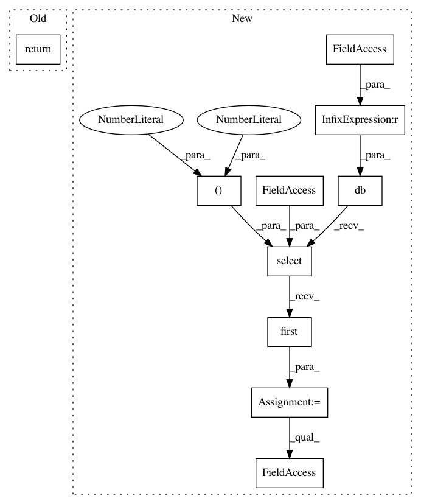

734af1c431c93768638e306e9b08f5ef30c1c2f7,modules/s3db/asset.py,S3AssetModel,asset_onaccept,#Any#,650
Before Change
resource = current.s3db.resource("asset_item", id=ids)
resource.delete()
return
// -------------------------------------------------------------------------
@staticmethod
def asset_log_onaccept(form):
After Change
site_id = form_vars_get("site_id")
if not organisation_id or not site_id:
// Component Tab: load record to read
record = db(atable.id == asset_id).select(atable.organisation_id,
atable.site_id,
limitby = (0, 1)
).first()
organisation_id = record.organisation_id
site_id = record.site_id
if site_id:
// Set the Base Location
stable = db.org_site
site = db(stable.site_id == site_id).select(stable.location_id,
limitby = (0, 1)
).first()
location_id = site.location_id
tracker = S3Tracker()
asset_tracker = tracker(atable, asset_id)
asset_tracker.set_base_location(location_id)
if kit:
In pattern: SUPERPATTERN
Frequency: 3
Non-data size: 10
Instances
Project Name: sahana/eden
Commit Name: 734af1c431c93768638e306e9b08f5ef30c1c2f7
Time: 2020-03-05
Author: fran@aidiq.com
File Name: modules/s3db/asset.py
Class Name: S3AssetModel
Method Name: asset_onaccept
Project Name: sahana/eden
Commit Name: d4d5d7cfda1df249b98ff9b6dd8a809c0296a947
Time: 2020-01-29
Author: fran@aidiq.com
File Name: modules/s3db/setup.py
Class Name:
Method Name: setup_monitor_task_enable
Project Name: sahana/eden
Commit Name: 2e268c86eee6a1753d16afe23388c9f26dd0f7ca
Time: 2020-01-27
Author: fran@aidiq.com
File Name: modules/s3db/setup.py
Class Name: S3SetupMonitorModel
Method Name: setup_monitor_task_onaccept